Natividad Márquez Baena
Práctica 3.1: Instalación de Tomcat
- Introducción e instalación de tomcat
- Despliegue manual mediante la GUI de administración
- Despliegue con Maven 3.1 Instalacion de Maven 3.2 Configuración de Maven 3.3 Despliegue
Introducción e instalación de tomcat
Esta práctica se centra en el despliegue de aplicaciones en un servidor Tomcat utilizando diferentes métodos, incluyendo el despliegue manual y el automatizado mediante Maven. El entorno que se va a utilizar es Debian 12. Se procede a la instalación de Tomcat
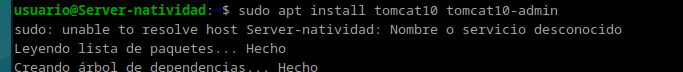
Posteriormente a la configuración de usuarios. Para ello se modifica el archivo tomcat-users.xml, para añadir usuarios y roles necesarios, especialmente:
Un usuario con rol manager-gui para la administración.
Un usuario con rol manager-script para despliegues.
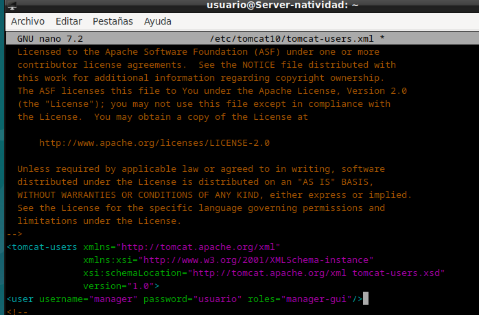
Se comprueba el estado del tomcat y se observa activo y funcionando correctamente.
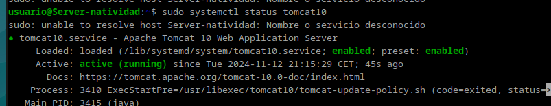
Posteriormente se reinicia el servicio de tomcat para que se apliquen los cambios.
Despliegue Manual Mediante la GUI de Administración
Se accede a la dirección http://localhost:8080/nombre_usuario/html, usando el nombre de usuario y la contraseña que se ha establecido previamente:
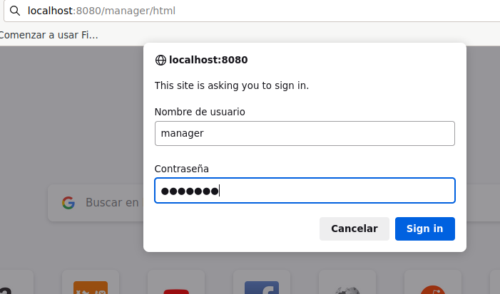
Una vez accedemos al tomcat comprobamos su funcionamiento mediante un archivo .war. Sin embargo, el archivo proporcionado no funciona correctamente así que se ha realizado la comprobación con un archivo distinto. El archivo de ejemplo se obtendrá desde la siguiente dirección:
https://tomcat.apache.org/tomcat-6.0-doc/appdev/sample/
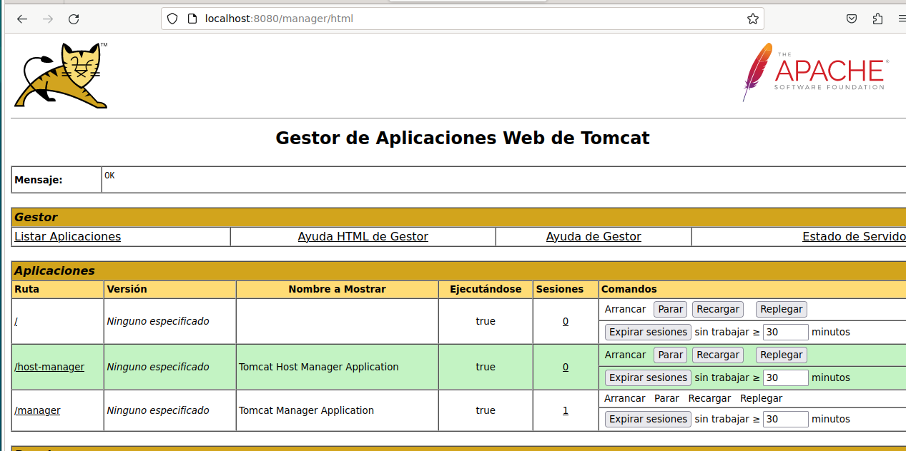
Se despliega el archivo en tomcat y se comprueba si se ha hecho correctamente.
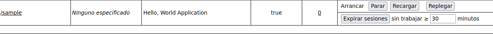 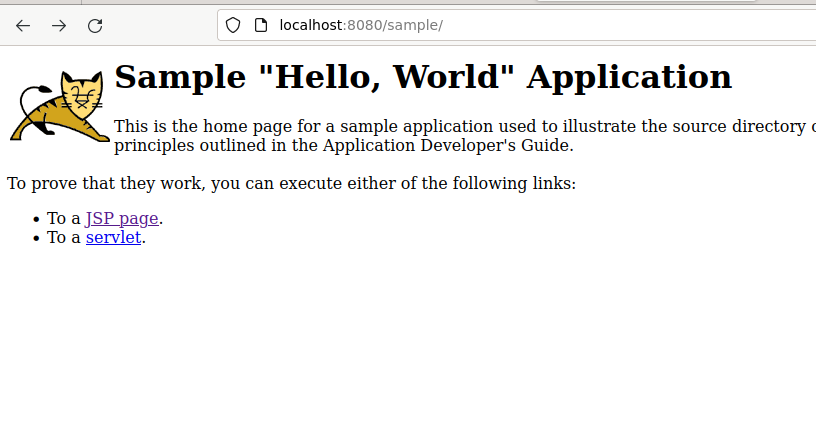
Despliegue con Maven
Primeramente se instala Maven
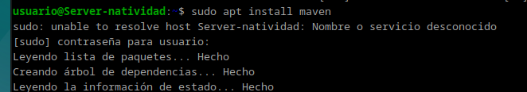
Ahora se procederá a añadir un nuevo usuario a al archivo tomcat-users.xml para poder desplegar con Maven. Para ello se modifica el mismo archivo de configuración.

Hecho esto, se procederá a configurar Maven. Para ello, se deberá modificar el archivo settings.xml.
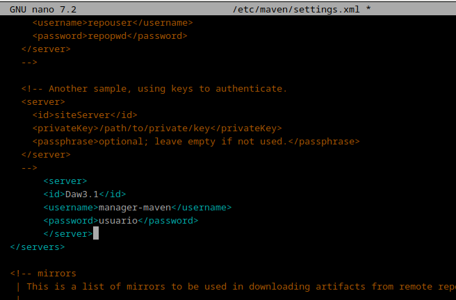
Posteriormente se clona el repositorio de ejemplo que se nos ha facilitado y se procederá a desplegarlo con Maven.
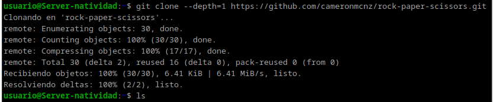 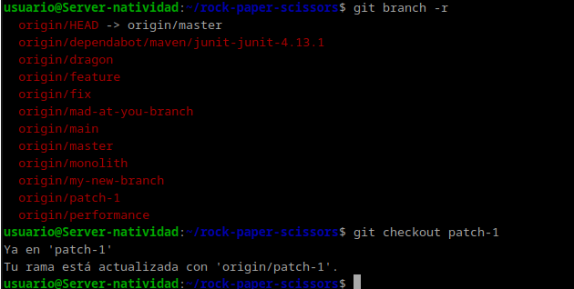
Además se modificará el archivo pom.xml para añadir la configuración, añadiendo cambios dentro de la etiqueta plugin.
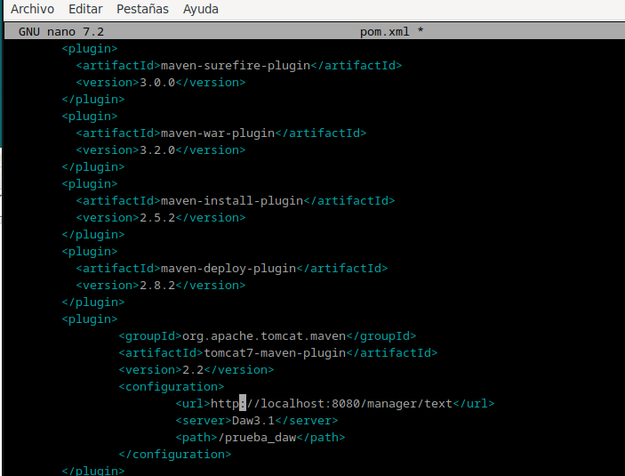
Para comprobar que todo funciona correctamente se ejecuta el comando mvn tomcat7:deploy, y esperamos a que nos de como resultado un mensaje de confirmación.
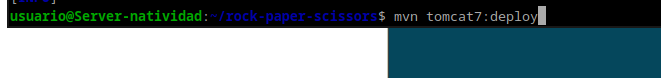 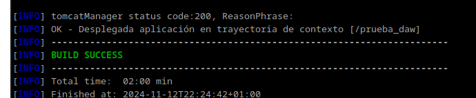
Accediendo de nuevo a la dirección http://localhost:8080/nombre_usuario/, esta vez con el usuario para maven.
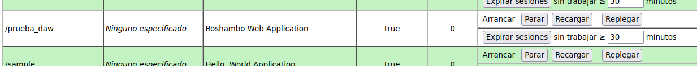
Debería de aparecer el directorio y se podrá desplegar:
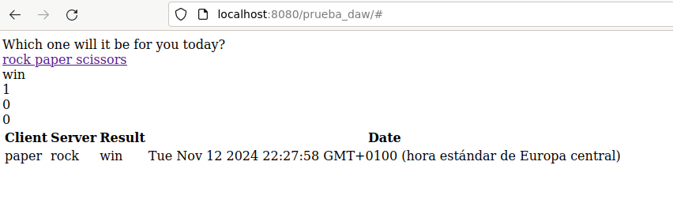